TIMELINE
시대별 연혁
사진이 있는 기록은 큼직하게 실었습니다.

1995–2003
작은 폐교에서 시작한 첫걸음
기록 43건
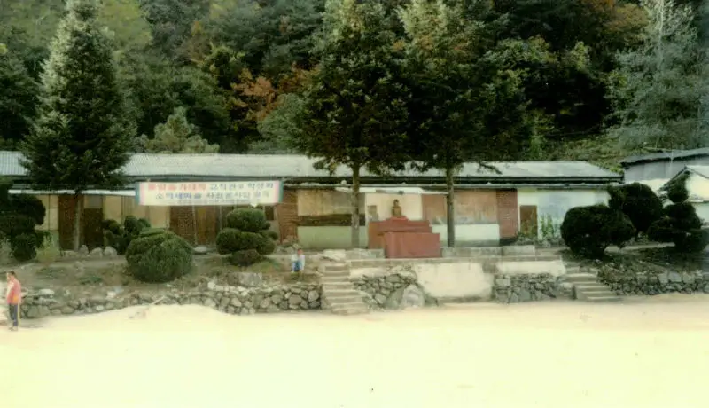
1987.5
일력스님(정승우님)이 원주시 금대리에 폐교로 있는 금대초등학교 부지를 매입하여 개인적으로 운영(최초 장애가족 23명 입주)
1993.4
소쩍새마을 신문 창간(8면)
1995.7
MBC방송 "PD수첩 소쩍새마을" 방송 / 중앙승가대학, 강원 원주시 판부면 소재 소쩍새마을(장애인생활시설) 인수 운영
1995.9
소쩍새마을 초대 원장 보각스님 취임
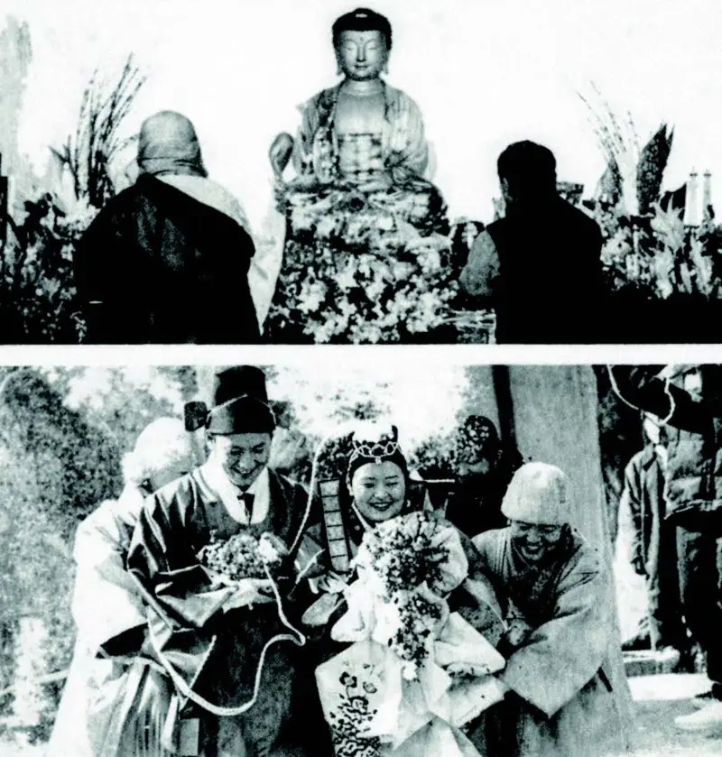
1995.12
소쩍새마을 조립식 건물 완공, 봉불식 봉행 (장애가족 3쌍 결혼)
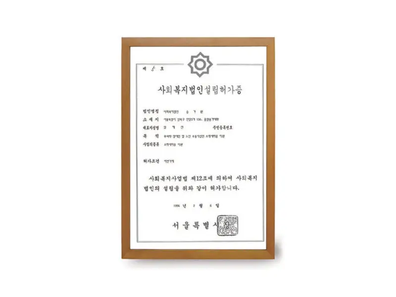
1996.2
사회복지법인 설립 허가(초대 이사장 임송산큰스님)
1996.3
소쩍새마을 자원봉사버스 운행 개시
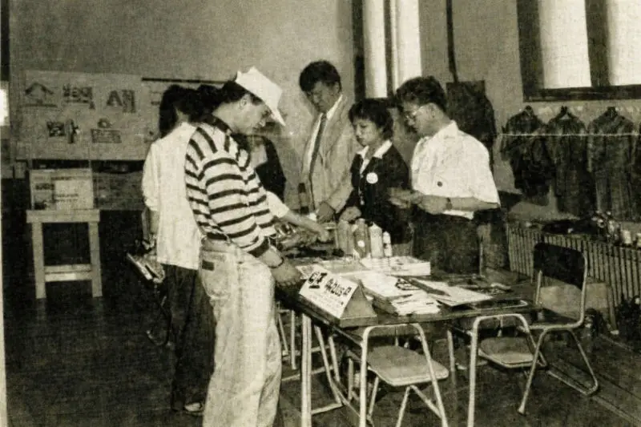
1996.5
제1회 승가원 소쩍새마을 후원바자회(중앙승가대학) 개최
1996.7
제2대 이사장 방지하큰스님 취임
1996.8
삼전종합사회복지관 수탁 운영
1996.9
제7회 전국 뇌성마비인 보치아 경기대회 첫 참가
1997.4
구립 미아3동어린이집(현 율곡어린이집) 수탁 운영
1997.5
승가원 후원 대바자회(동국대학교) 개최
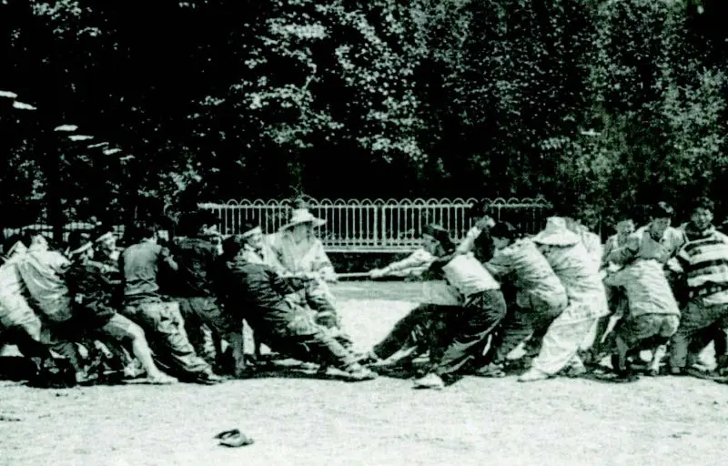
1997.9
제1회 소쩍새마을 체육대회(가을운동회) 개최
1997.10
승가원 종합복지타운 건립 세부현황 발표
1998.1
성북그룹홈 1, 2호 설치 승인
1998.3
횡성 종합복지타운 마스터플랜 완성 / 한솔종합사회복지관 개관
1998.4
소쩍새마을 인터넷 홈페이지 개설
1998.5
횡성재활농장작업 본격화
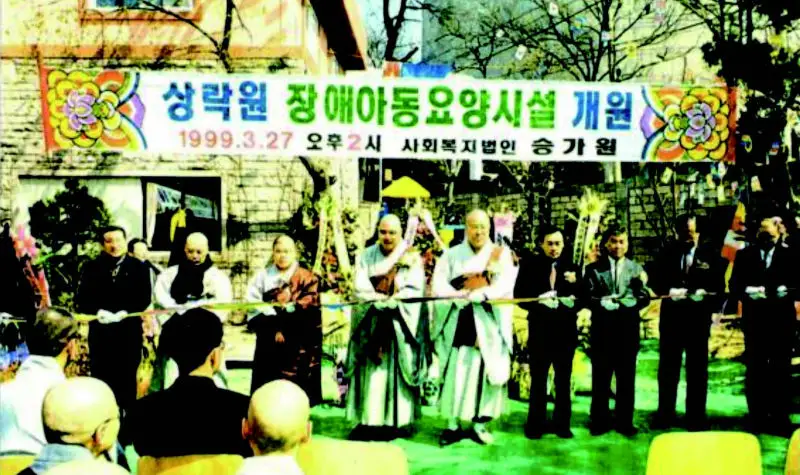
1998.6
중증장애아동요양시설 상락원(현 승가원장애아동시설) 개원
1998.9
구립 번2동어린이집 개원 및 수탁운영 / 안암동부지 장애아동요양시설 상락원 착공 / 소쩍새마을 홈페이지 새단장
1999.1
삼전종합사회복지관 회계감사 결과 서울시장 표창 수상 / 횡성 종합복지타운 공사 본격 추진 및 법당 부처님 점안식 봉행
1999.2
제3대 이사장 박현성큰스님 취임 / 삼전종합사회복지관 1998년 서울시 사회복지관 평가 1등급 복지관 선정
1999.3
승가원 장애가족들, 명수학교 입학 / 상락원(현 승가원장애아동시설) 안암동 이전 개원
1999.5
제3차 불교사회복지대회 공로패 표창(복지시설부문) / 불기 2543년 부처님오신날 연등축제 첫 참여
1999.9
후원자 관리 전산시스템 도입 및 활용
1999.10
녹야원 주간보호·순회재활서비스센터 시설 이전
2000.6
제4대 이사장 정인스님 취임
2000.10
승가원 홈페이지(www.sgwon.or.kr) 개통
2000.11
승가원 제5대 이사장 종범큰스님 취임
2001.1
삼전종합사회복지관 내 장애아동주간보호센터 개원 / 삼전종합사회복지관 2000년 서울시 복지관 평가 최우수복지관 선정(전체1위)
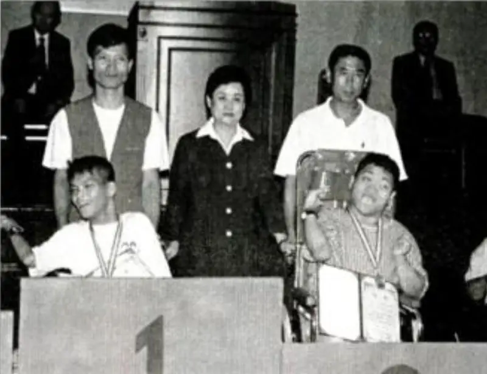
2001.9
제12회 뇌성마비인보치아 경기대회 안명훈 '금메달', 길희진 '동메달' 획득
2001.10
자동이체(CMS) 후원 방법 도입
2001.11
승가원 후원 ARS 전화번호 개통
2001.12
<새야 새야 소쩍새야> 출판 기념회 개최
2002.6
정영화, 김옥희 가족, 소쩍새마을 네 번째 부부 결혼
2002.11
KBS "사랑의 리퀘스트" 상락원 장애아동 방영 / 승가원 새홈페이지 개통
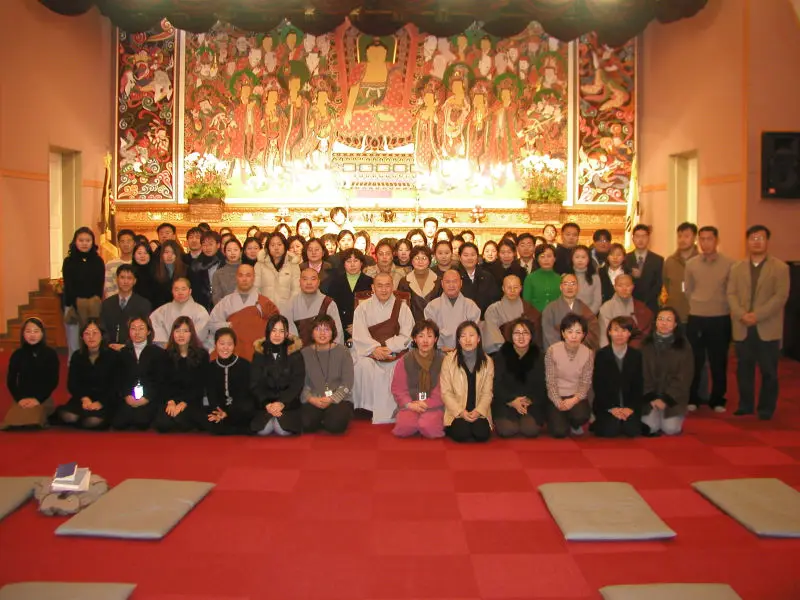
2002.12
제1회 사회복지법인 승가원 직원 송년법회 봉행
2003.2
소쩍새마을 안명훈 가족, 권철현 생활재활교사 체육훈장 백마장, 기린장 수여 / 삼전종합사회복지관 2003년 서울시 사회복지관 평가 우수복지관, 우수프로그램 선정
2003.3
삼전어린이집 개원 및 수탁 운영
2003.4
소쩍새마을 신문 발간 10주년 기념행사
2003.10
승가원 후원자 배가운동(후원자+1=자비나눔) 시작
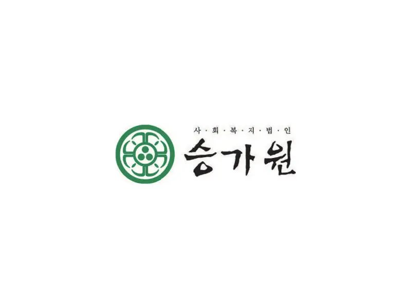
2003.12
승가원 상징 로고타입과 심벌마크 확정

2004–2010
운영의 틀을 세운 시기
기록 49건
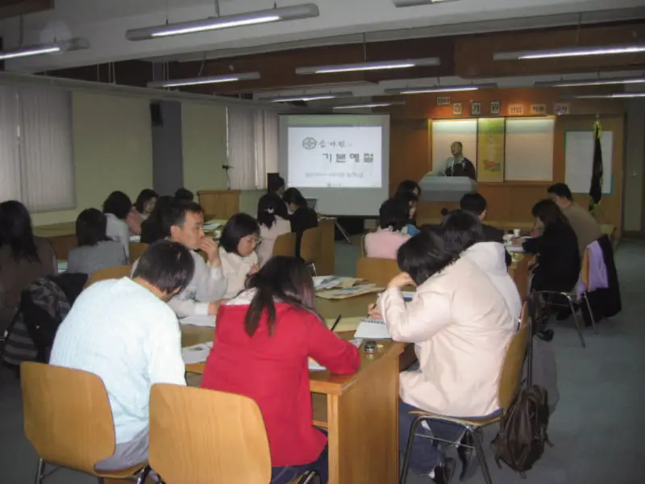
2004.2
제1회 승가원 신입직원교육 실시
2004.3
승가원 새홈페이지 개통
2004.4
KBS "사랑의 리퀘스트" 상락원 장애아동 방영 / 승가원자비복지타운(중증, 정신지체장애인시설) 건립 부지 매입 완료
2004.6
최우수후원가족, 승가원후원가족 벽시계(감사기념품) 배포 사업 시작
2004.7
불기2548년 연등축제 불교문화마당 부문 우수단체(원력상) 표창
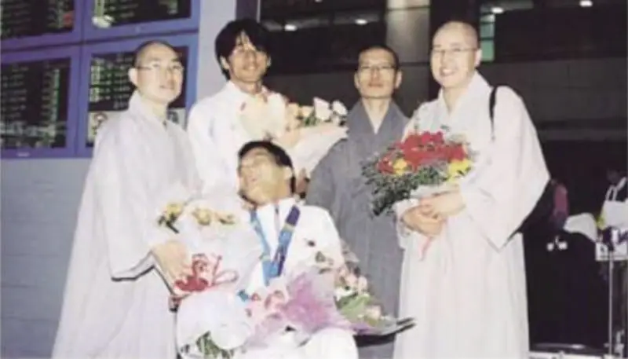
2004.9
제12회 아테네 장애인올림픽 보치아경기 금메달, 동메달 획득(소쩍새마을 안명훈 가족)
2004.11
종범 큰스님 제 5대 이사장 재선임
2004.12
승가원 고유 달력 제작 및 후원자 배포 시작 / 승가원자비복지타운 건립 계획 발표 / 승가원자비복지타운 건축설계업체 입찰공고
2005.1
승가원자비복지타운 토목설계 인·허가 취득 / 승가원자비복지타운 건립 소쩍새마을 이전 불사 원만 성취 기원법회
2005.2
승가원자비복지타운 건립을 위한 '자비의 집짓기운동' 및 '연꽃저금통 제작 배포'
2005.4
부처님오신날 '자비나눔등 특별 브로셔' 제작 및 홍보 시작 / 중계1동어린이집 수탁
2005.5
성북장애인복지관 수탁 확정 / 승가원자비복지타운 조감도 확정
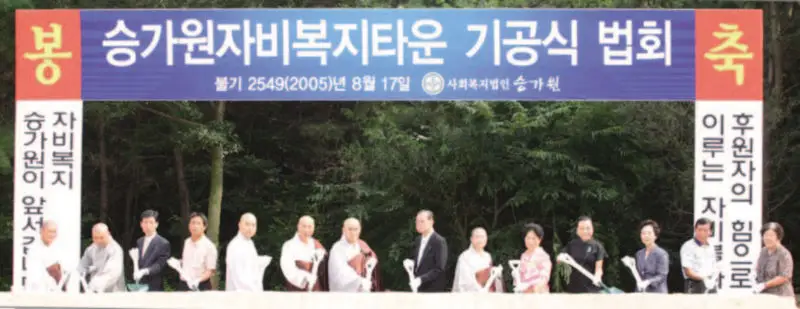
2005.8
승가원자비복지타운 기공식 법회
2005.9
제3회 서울사랑시민상 복지부문 우수단체 장려상 수상
2006.1
상락원, 승가원장애아동시설로 시설명칭 변경
2006.5
불기2550년 연등축제 불교문화마당부문 우수단체(원력상) 표창
2006.6
승가원자비복지타운 동판제작 완료
2006.8
미래를 향한 첫걸음 승가원자비복지타운 완공
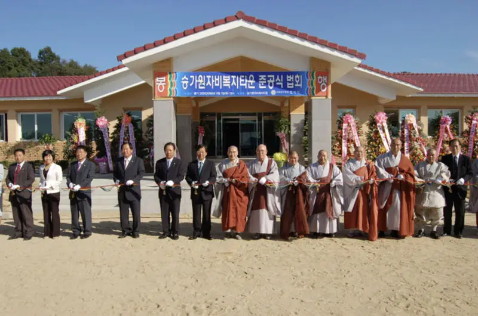
2006.9
승가원자비복지타운 준공식 법회 봉행
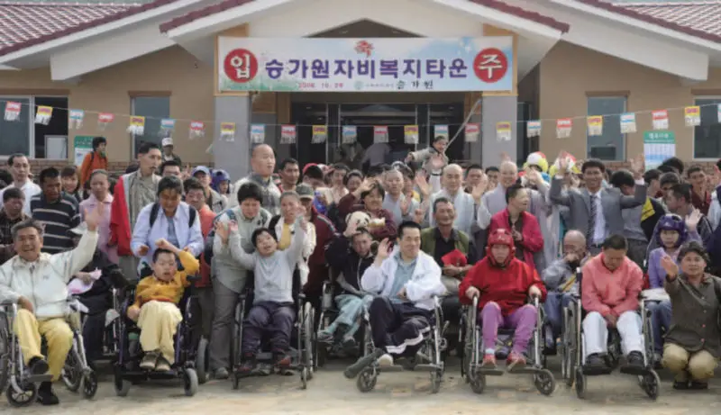
2006.10
소쩍새마을 신문, <자비복지 승가원>으로 제호 변경 / 승가원자비복지타운 입주 및 개원식 봉행
2006.11
승가원자비복지타운 복지시설 인가 획득 / 삼전종합사회복지관 2006년 서울시 사회복지관 평가 우수복지관, 우수프로그램 선정
2006.12
소쩍새마을 철거완료
2007.1
승가원, 불교계를 대표하는 복지단체 1위 선정(법보신문) / 승가원 운영의 3대 정신과 새로운 비전 선포(법률정신, 복지정신, 자비정신) / 승가원장애아동시설 서울시 장애인생활시설 평가 우수 생활시설 선정
2007.2
웹매거진 <Happy 승가원> 창간
2007.7
성북장애인복지관 현판식 및 개소식 / 모금전문사회복지사 채용, 사찰과 함께하는 자비나눔 실천운동, 어린이집과 함께하는 행복나눔교육 시작
2007.8
승가원 캐릭터 "연꽃돌이" 탄생
2007.10
성북장애인복지관 개관식 봉행 / 온라인 후원사업 시작(네이버 해피빈, 해피로그 및 싸이월드 미니홈피 개소)
2008.1
승가원장애아동시설 서울시 장애인생활시설 평가 우수 생활시설 선정 / 승가원희망행복타운(현 승가원행복마을) 건립 및 예산 확보 계획 수립 / 새해 소원지 달기 사업 시작
2008.2
승가원자비복지타운 노천불 및 재활치료센터 건립 착수
2008.3
후원가족 전용 홈페이지 개설 및 후원가족증 발급 시작
2008.8
승가원자비복지타운 예술공연단, 제3회 한일 장애우 문화교류의 장 공연
2008.9
제1회 승가원 사내제안제도 시작
2008.11
승가원자비나눔관음보살 봉불식 봉행
2008.12
장애복지사업 지정기부 모금운동(희망적립) 시작 / 승가원 캐릭터 연꽃돌이 활용 고유장엄등 제작
2009.2
승가원 홈페이지를 통한 인터넷 후원개발사업 시작
2009.3
제6대 이사장 태원큰스님 취임
2009.5
승가원 재활치료센터 준공
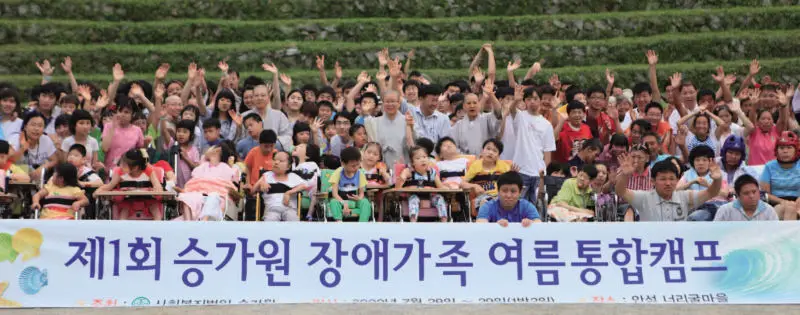
2009.7
제1회 승가원 장애가족 여름 통합캠프 개최
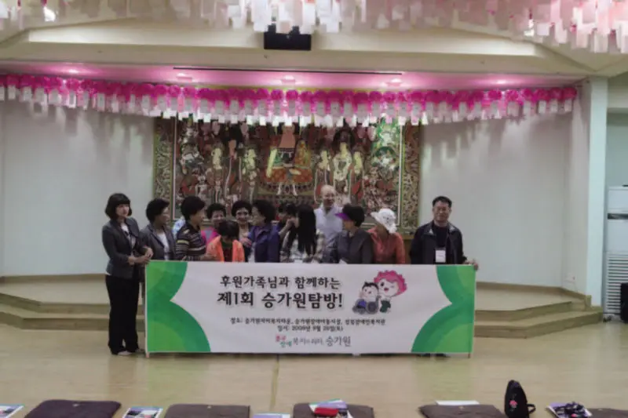
2009.9
제1회 승가원탐방 진행
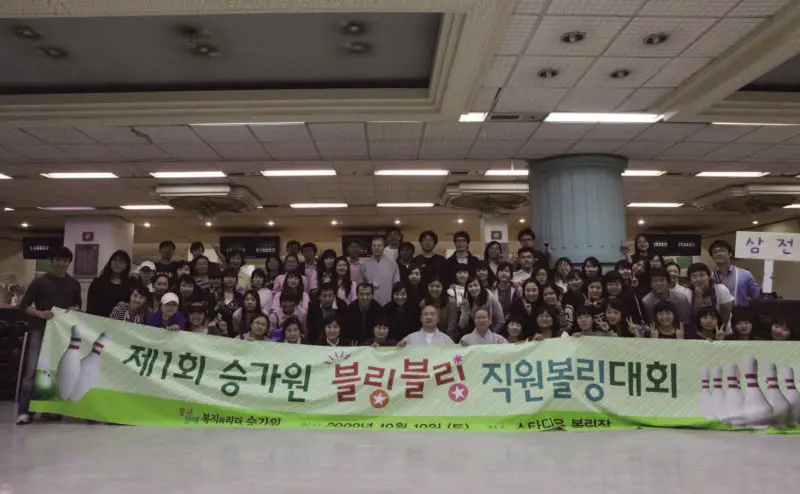
2009.10
제1회 승가원 블링블링 직원볼링대회 개최
2009.11
승가원자비복지타운 난타공연팀, 두둥페스티발 대상 수상
2009.12
사회복지계 최초 온라인기부금영수증 발급(위변조방지솔루션 도입) / 삼전종합사회복지관 2009년 서울시 사회복지관 평가 최우수 복지관 선정 / 중계1동어린이집 서울시 모범보육시설 선정
2010.3
승가원 후원개발 BBS라디오 광고 시작 / 승가원자비복지타운 법당 상량식 / 제1회 승가원 직원 템플스테이 사업 시작
2010.4
MBC스페셜 "승가원의 천사들" 방영 / 장애인식개선사업(초등학교) 시작 / 장애인식개선사업(중학교) 시작 / 장애인식개선사업(대학교) 시작
2010.7
승가원 장애가족 현대자동차 광고 출연
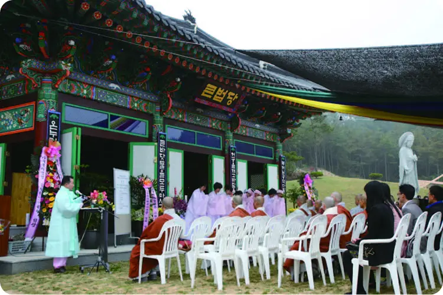
2010.8
행복나눔 거리캠페인(후원개발사업) 시작(사회복지계 최초 모금전문사회복지사 양성)
2010.9
제2회 삼일투명경영대상 장애인부문 대상 수상
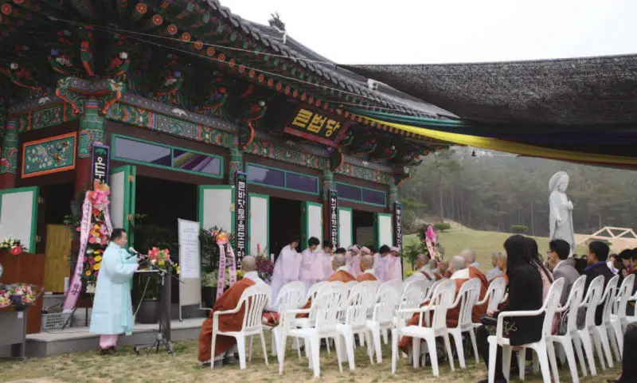
2010.10
제1회 승가원 직원 수계법회 봉행 / 승가원 큰법당 낙성식 및 탱화 점안법회 봉행
2010.12
승가원 지혜경영 선포 / 후원가족 개인정보 및 금융정보 보호를 위한 DB암호화 Solution 및 보안장비 도입

2011–2019
복지 기관으로 단단히 자리 잡은 시기
기록 45건
2011.4
어린이 장애인식개선교육(인형극) 시작
2011.8
후원개발팀 개편, 행복나눔거리후원전담팀 구성
2011.9
승가원 장애아동 도서 <조금 느려도 괜찮아> 출간
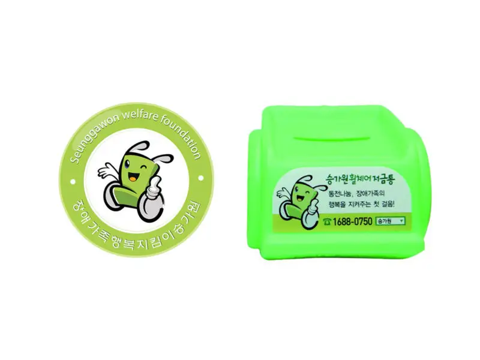
2011.10
승가원 장애복지캐릭터 '휠체어맨' 및 '휠체어저금통' 제작
2011.11
MBC휴먼다큐 '그날', '승가원의 천사들, 사진전 그날' 방송 / 2011 승가원 장애바로알기달력 제작, 발행
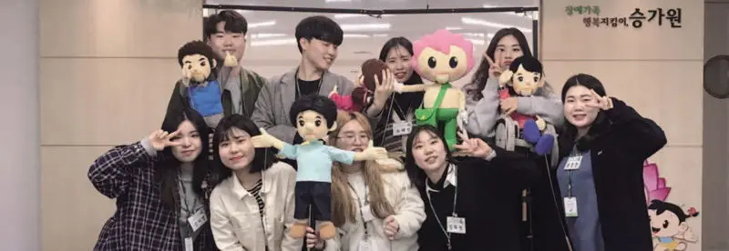
2011.12
사회복지계 최초 "승가원 복지실습장학생제도" 시행
2012.1
사회복지법인 승가원 사회복지사 통합채용 제도 도입 / 성북장애인복지관 2011년도 전국 장애인복지관 평가 최우수기관 선정
2012.3
승가원 홈페이지 시각장애가족을 위한 음성 지원서비스(voice eye) 설치
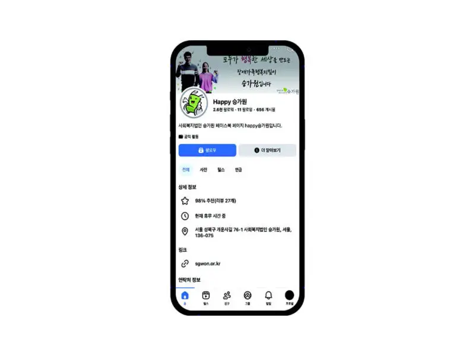
2012.4
승가원 공식 SNS(페이스북, 트위터) 개설
2012.6
이천시장애인복지관 수탁, 운영협약 체결
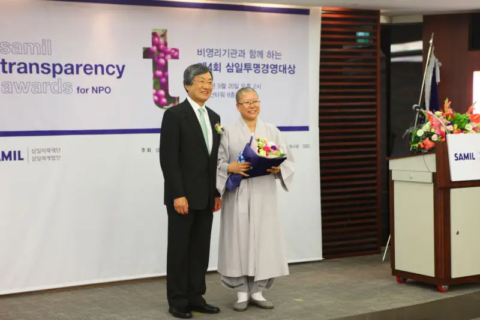
2012.9
제4회 삼일투명경영대상 대상 수상
2012.10
제2회 전국 지적장애인 볼링대회 개최
2012.12
삼전종합사회복지관 2012년 서울시 사회복지관 평가 우수복지관(전 영역A등급) 선정
2013.1
스마트(모바일) 후원개발 시작
2013.2
승가원자비복지타운 직원기숙사 완공
2013.3
삼전종합사회복지관 2012년도 전국 복지관평가 최우수복지관(A등급) 선정
2013.4
한국장애바로알기센터 홈페이지 개통
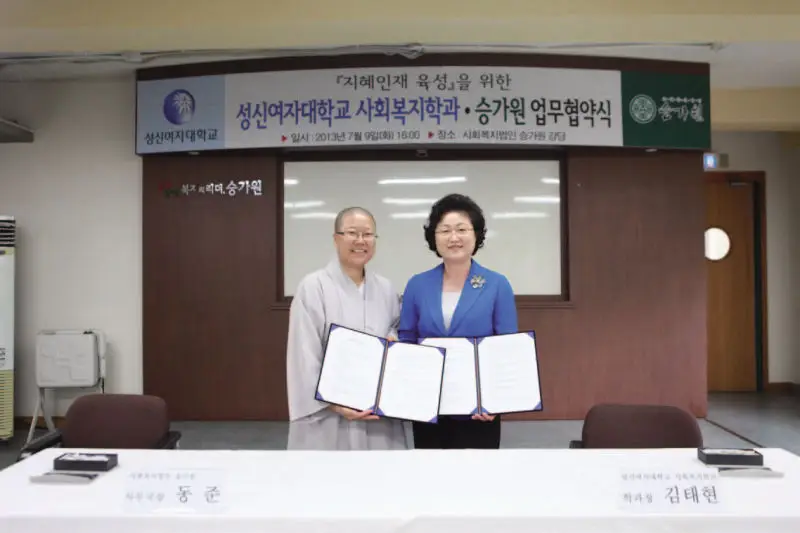
2013.7
'지혜인재 육성을 위한 대학-현장 업무협약' 사업 시작
2013.11
승가원 홈페이지 웹 접근성 우수사이트 인증 / 사회복지 석/박사 장애복지연구비지원사업 시작
2014.3
제8대 이사장 원행스님 취임 / 승가원자비복지타운 2013년도 전국 장애인거주시설 평가 A등급 선정
2014.5
승가원행복마을 2013년도 장애인거주시설 평가 A등급 선정 / 승가원자비복지타운 자비마을 2013년도 전국 장애인거주시설 평가 A등급 선정
2014.6
지혜인재 육성을 위한 현장 업무협약사업 제1회 장학금 수여식 개최
2014.8
승가원자비복지타운 재활치료센터 증축 개소식 진행 / 서울 행복플러스작업장 수탁 확정
2015.3
성북장애인복지관 2014년도 전국 장애인복지관 평가 최우수복지관(A등급) 선정
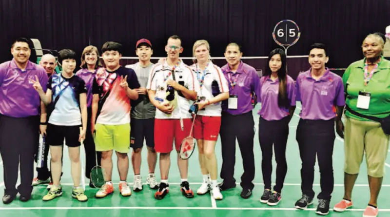
2015.8
성북장애인복지관 배드민턴팀 2015 LA 스페셜올림픽 금메달 수상
2015.9
관악구 장애인종합복지관 수탁 확정
2015.12
성북장애인복지관, 장애인먼저실천상 수상 / 삼전종합사회복지관 2015년 서울시 사회복지관 평가 전체영역 A등급 평가 / 서울희망행복마을 건립 건축설계 제안공모 시작
2016.2
서울희망행복마을 건립 건축설계 제안공모 설계업체 선정
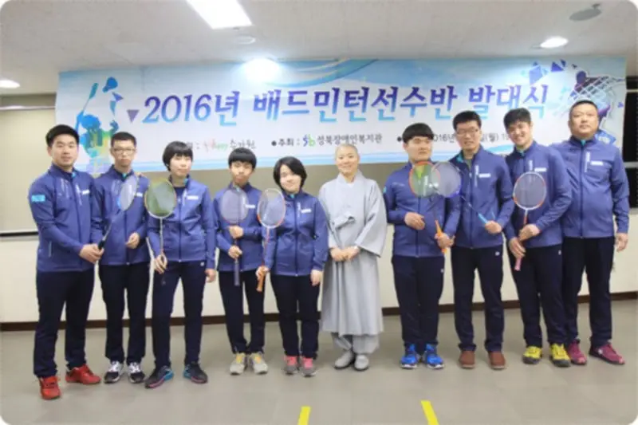
2016.3
장애가족 재능지원 및 자립을 위한 특화사업 "승가원 배드민턴 선수반"
2016.5
승가원 장애가족 생산품 '가원이네 밥엔발아잡곡' "발아땅콩" 출시
2016.6
승가원 공식 블로그 "가원이네" 오픈
2016.8
서울희망행복마을 건립부지내 건축물 철거 입찰공고 / 승가원 장애가족 생산품 '가원이네 밥엔발아잡곡' "한끼 발아잡곡 세트" 출시
2017.4
관악구장애인종합복지관 개관
2017.5
승가원자비복지타운 자비마을 2016년도 전국 장애인거주시설 평가 A등급 선정 / 승가원자비복지타운 복지마을 2016년도 전국 장애인거주시설 평가 A등급 선정 / 승가원행복마을 2016년도 장애인거주시설 평가 A등급 선정
2017.8
승가원희망행복마을 건립, 건축허가 완료 / 승가원희망행복마을 최종 설계도 공개
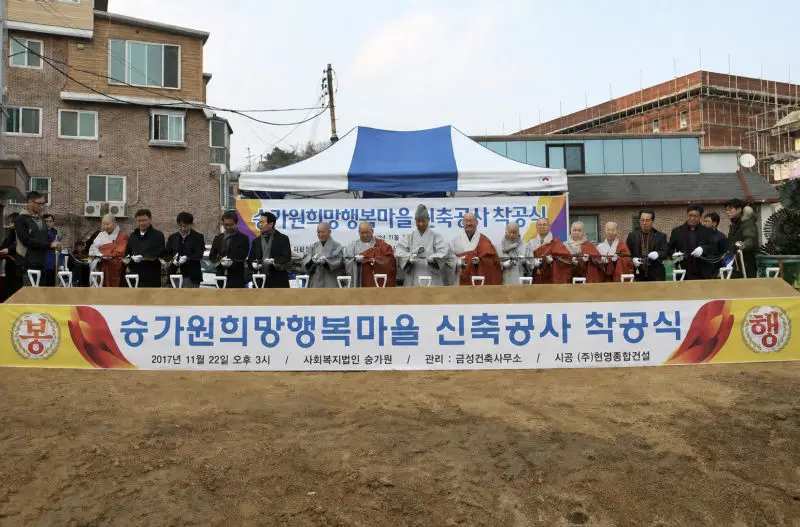
2017.11
승가원 제1회 VIP행복탐방 진행 / 승가원희망행복마을 착공식
2018.3
이천시장애인종합복지관 2017년도 전국 장애인복지관 평가 A등급 선정 / 성북장애인복지관 2017년도 전국장애인복지관 평가 A등급 선정 / 제9대 이사장 성문스님 취임
2018.8
승가원희망행복마을 토목공사 완료 및 건축공사 시작
2018.9
승가원한국장애바로알기센터 직장 내 장애바로알기 교육 실시
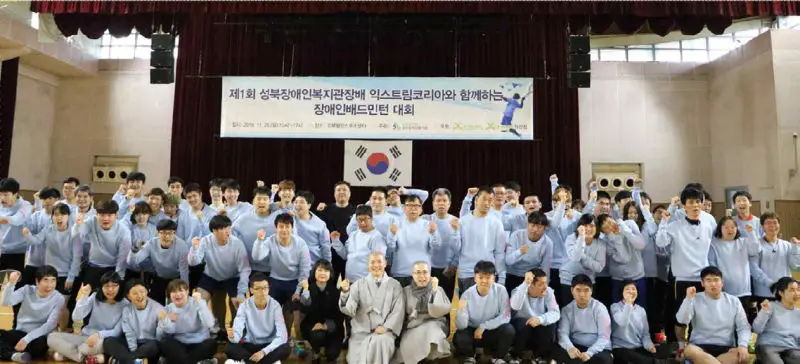
2018.11
제1회 성북장애인복지관장배 익스트림코리아와 함께하는 장애인배드민턴대회 개최
2019.1
제10대 이사장 원종스님 취임
2019.3
성북장애인복지관 배드민턴팀, 2019년 스페셜올림픽 금, 은메달 수상 / 삼전종합사회복지관 2018년 서울시 사회복지관 서울형평가 탁월 10개, 충실 18개(충실이상 비율 100%) / 이천시장애인복지관 신축 복지관 건립 시작
2019.4
승가원희망행복마을 상량식 봉행
2019.9
삼전동 송파키움센터 신규수탁
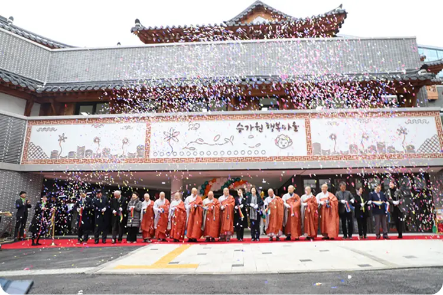
2019.12
성북장애인복지관 주간활동서비스, 보건복지부장관 표창 / 승가원행복마을 준공법회 봉행

2020–현재
저마다의 삶을 존중하는 오늘
기록 32건
2020.2
온라인 모금사업 전담팀 구성
2020.3
승가원자비복지타운 2019년도 장애인거주시설 평가 최우수(A등급) 선정
2020.5
승가원행복마을 2019년도 장애인거주시설 평가 A등급 선정 / 승가원자비복지타운 자비마을 2019년도 전국 장애인거주시설 평가 A등급 선정 / 승가원자비복지타운 복지마을 2019년도 전국 장애인거주시설 평가 A등급 선정
2020.6
행복플러스발달장애인센터 단기보호시설 2019년도 평가 A등급 선정
2020.8
승가원 홈페이지 개편
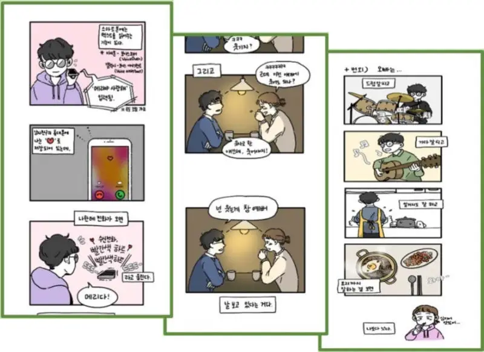
2020.10
제1회 승가원장애바로알기 공모전 개최
2021.1
고양시덕양행신종합사회복지관 신규 수탁운영
2021.4
이천시장애인종합복지관 이전 개관기념식
2021.5
성북그룹홈2호 2020년도 장애인공동생활가정 평가 A등급 선정 / 이천시장애인종합복지관 2020년도 경기도형 장애인복지관 평가 A등급 선정
2021.8
승가원 행복나눔가게 사업 시작
2021.10
이천시장애인종합복지관 2020년도 경기도 장애인복지관 평가 A등급 선정 / 제1회 승가원 기부하이킹 개최
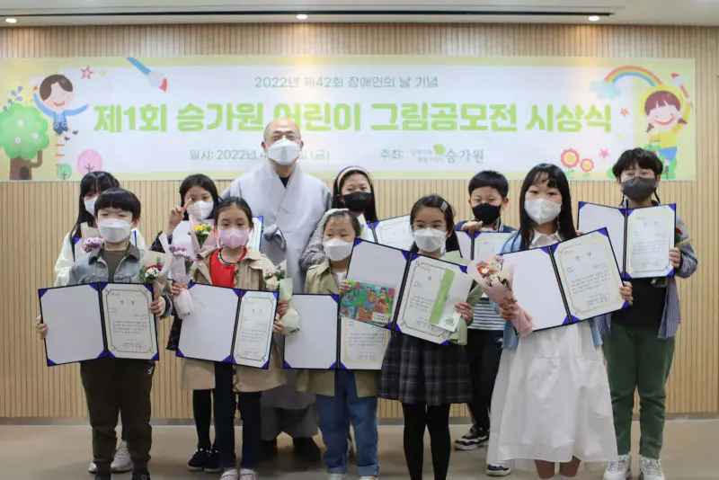
2022.3
장애인의 날 기념 제1회 승가원 걷기마라톤 대회 개최 / 제1회 승가원 어린이 그림공모전 개최
2022.9
승가원행복마을 2022년도 장애인거주시설 평가 A등급 선정
2022.10
승가원, 신한은행과 유산나눔 신탁 업무협약 체결
2022.11
관악구장애인종합복지관 장애인먼저실천상 수상
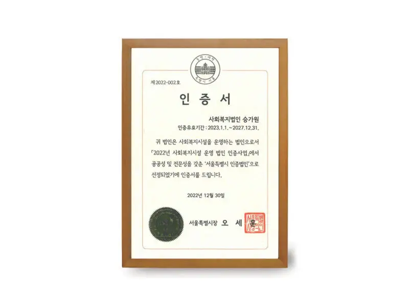
2022.12
2022년 사회복지시설 운영 법인 인증사업 선정
2023.1
제11대 이사장 월우스님 취임
2023.2
승가원자비복지타운 자비마을 2022년도 전국 장애인거주시설 평가 A등급 선정 / 승가원자비복지타운 복지마을 2022년도 전국 장애인거주시설 평가 A등급 선정 / 고양시덕양행신종합사회복지관 2022년 경기도 사회복지관 평가 A등급 선정
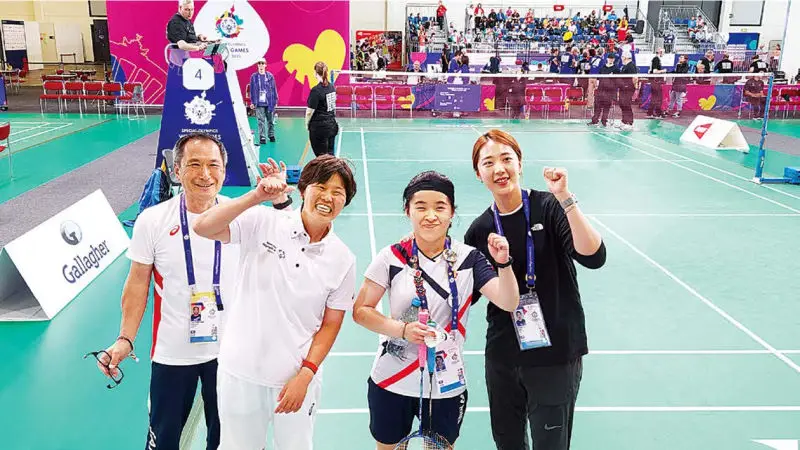
2023.6
성북장애인복지관 배드민턴선수단 문지연 선수, 베를린 스페셜올림픽 금메달 획득
2023.11
승가원 캐릭터 네이밍 공모전 개최
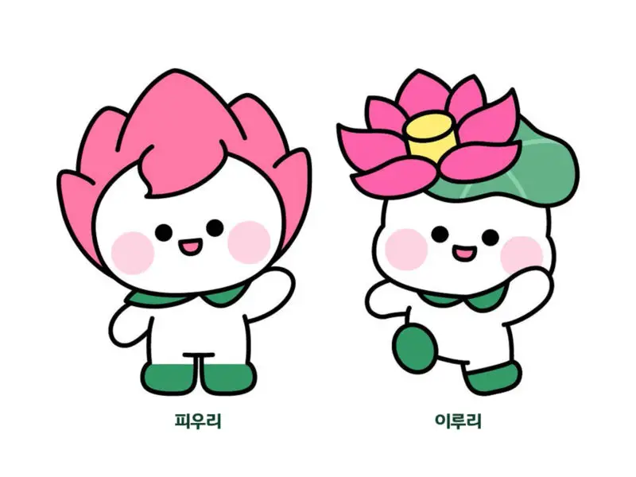
2023.12
승가원 마스코트 캐릭터 리뉴얼 (피우리, 이루리 제작)
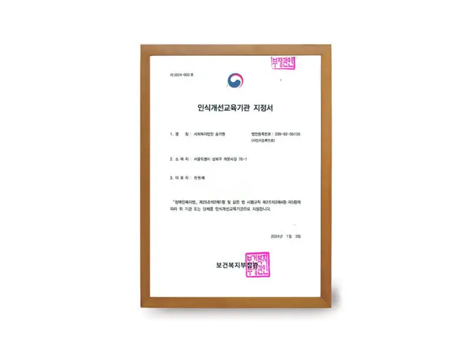
2024.1
보건복지부 지정 장애인식개선교육기관 선정
2024.4
성북그룹홈2호 2023년도 장애인공동생활가정 평가 A등급 선정
2024.8
스페셜올림픽코리아 배드민턴 금 4개, 은 1개, 동 5개 전원 메달 획득 / 철도공익복지재단 사회공헌 사업 선정
2024.12
이천시장애인종합복지관 부설 주간이용센터 / 2023년도 경기도 장애인복지관 평가 A등급 선정 / 승가원 발달장애이해 어린이 인형극 신규 제작
2025.1
고양시덕양행신장애인주간보호센터 2024년도 경기도 장애인주간보호시설 평가 A등급 선정
2025.2
고양시덕양행신종합사회복지관 2024년 경기도형 사회복지관 평가 A등급 선정
2025.3
삼전종합사회복지관 2024년 서울시 사회복지관 서울형평가 충실 24개(충실비율 100%)
2025.9
제12대 이사장 현각스님 취임 / 관악구장애인종합복지관 장애인우수일자리사례 보건복지부 장관상 수상
2025.10
사회복지법인 승가원 기획재정부 기부장려금단체 지정
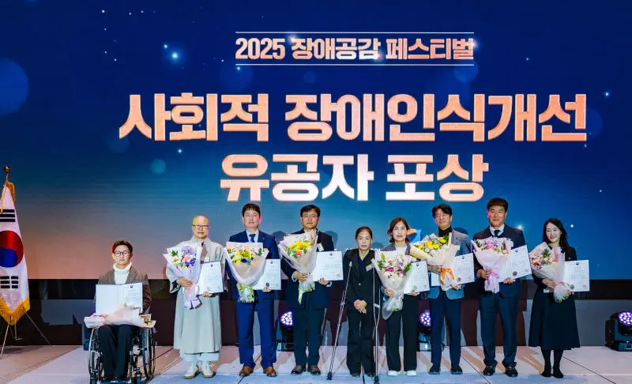
2025.11
사회복지법인 승가원 보건복지부장관상 수상(장애인식개선교육 우수기관)
2025.12
관악구장애인종합복지관 2025년 개인예산제 시범사업 유공 보건복지부 장관상 수상